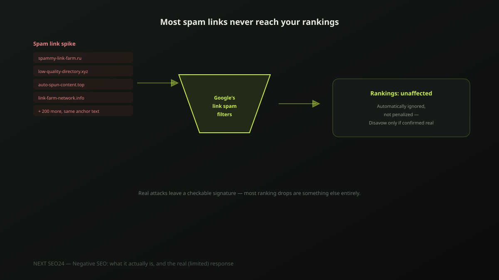

Negative SEO: what it actually is, and the real (limited) response
"A competitor is doing negative SEO on us" is one of the most common explanations business owners reach for after a ranking drop — and one of the least common actual causes. Here's what negative SEO genuinely is, how rare it actually is, how to recognize a real attack if one is happening, and the one legitimate tool for responding to it.
What negative SEO actually is
Negative SEO is a deliberate attempt by someone else — usually assumed to be a competitor — to damage a site's rankings, most commonly by pointing a large volume of spammy, low-quality backlinks at it. Less common variants include scraping and republishing a site's content elsewhere to create duplicate-content confusion, or posting fake negative reviews. It's a real category of malicious activity, but a narrow one — not a catch-all explanation for any ranking drop that doesn't have an obvious cause.
Why most ranking drops are not negative SEO
Before suspecting an attack, rule out the far more common causes: a recent Google algorithm or spam update, a technical issue like a broken canonical tag or an accidental noindex, or a genuine content-quality gap that a competitor's page now fills better. Our guide to diagnosing a sudden ranking drop walks through this in order — negative SEO belongs at the end of that checklist, not the start, because it's genuinely the least common cause we see in practice.
How to actually recognize a real backlink attack
A genuine attack leaves a specific, checkable signature in Search Console's backlink report: a sudden, sharp spike in referring domains over days rather than a gradual build, links overwhelmingly from unrelated foreign-language or clearly spammy sites, and a suspiciously repetitive anchor text pattern — the same exact phrase used across dozens of low-quality domains in a short window. A slow, organic increase in backlinks, even messy-looking ones, is not this pattern.
Why it's harder to pull off than it sounds
Google's link-evaluation systems are specifically designed to recognize obviously manipulative, low-quality link patterns and discount them automatically — without penalizing the site being linked to. This is precisely why negative SEO campaigns largely stopped being an effective attack years ago: the mechanism they depend on (spammy links actively hurting the target) is the same mechanism Google has spent years hardening against. It's not that attacks never happen; it's that they're considerably less effective than the fear around them suggests.
The real response: the Disavow Tool, used correctly
If you've confirmed a genuine spam link pattern through Search Console, Google's Disavow Tool is the legitimate response — a plain text file listing the domains or specific URLs you want Google to disregard when evaluating your site:
# Disavow file — one domain or URL per line
domain:spammy-link-farm-example.com
domain:another-suspicious-domain.net
https://specific-page-example.com/spam-postImportant: this doesn't remove or delete the links — it tells Google to stop counting them when it evaluates your site. Also important: Google has stated plainly that most sites never need to use this tool at all, because its own systems already ignore spammy links in the vast majority of cases. Using Disavow on a normal, messy-but-organic backlink profile can do more harm than the links themselves ever would.
A pre-panic checklist
- Ruled out a recent algorithm/spam update as the cause first
- Checked for technical issues — canonical tags, robots.txt, accidental noindex
- Reviewed Search Console's backlink report for a genuine sudden spike, not gradual growth
- Confirmed a repetitive, clearly manipulative anchor text pattern across the new links
- Only then — used the Disavow Tool on the specifically confirmed spam domains, not preemptively
If you're seeing an unexplained ranking drop and aren't sure whether it's negative SEO or something else, send us your site — we'll walk through the actual diagnosis with you rather than guessing.
Frequently asked questions
Can a competitor really tank my rankings with negative SEO?
It's rarer than it sounds, and Google's own systems are built to make it harder over time. Google's algorithms are designed to recognize and ignore obviously manipulative link patterns automatically, without punishing the target site. It's not impossible, but it's far less common a cause of a ranking drop than technical issues, algorithm updates, or content-quality problems on your own site.
Does the Disavow Tool actually remove the malicious backlinks?
No. It doesn't delete or remove anything from the linking site — it tells Google to discount those specific links when evaluating your site, effectively asking Google to ignore them. The links still exist; Google just stops counting them against (or for) you.
How do I know if a ranking drop is negative SEO or something else?
Check the more common causes first: a recent Google algorithm update, a technical issue like a broken canonical tag or accidental noindex, or a content-quality problem. Only after ruling those out should you check your backlink profile in Search Console for a sudden, unexplained spike of spammy links — genuine negative SEO leaves that specific signature, and it's uncommon enough that it should be the last explanation you check, not the first.
Worried about an unexplained ranking drop?
Send us your site — we'll diagnose the actual cause in order, from most to least common, before jumping to conclusions.
Chat on WhatsApp →